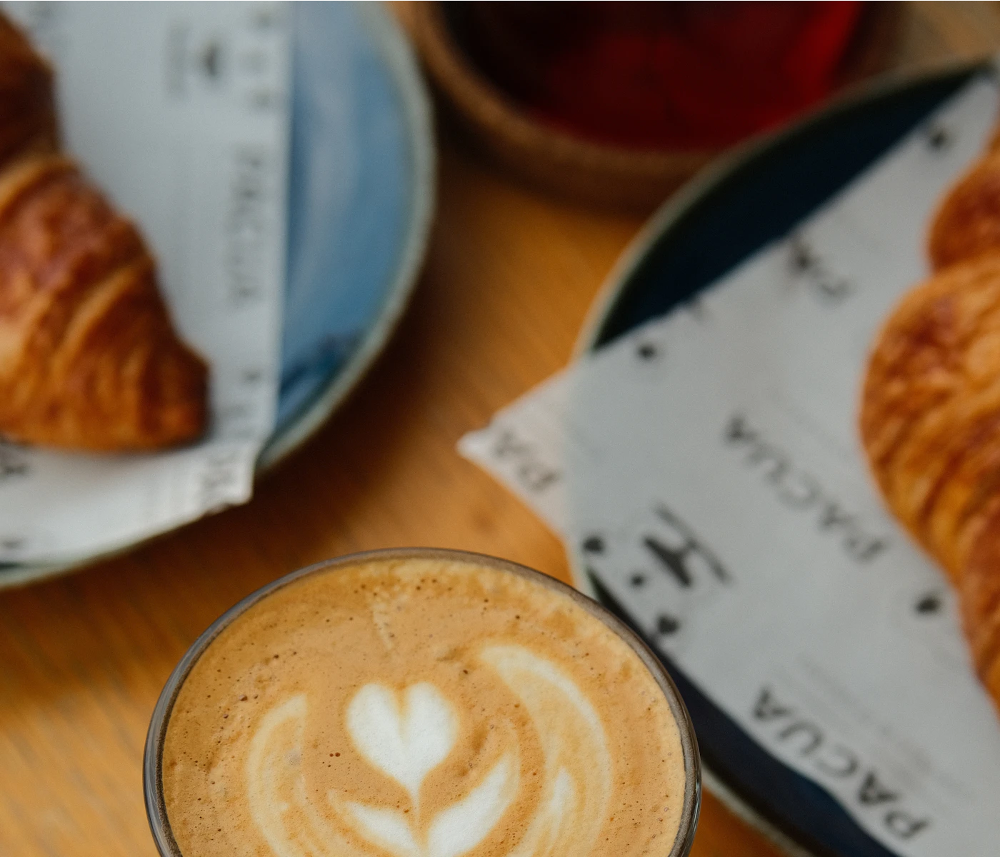

Der Morgen gehört dir.
Ein guter Kaffee, ein warmes Croissant und ein bisschen Zeit. Willkommen im Café Morgenlicht.
Unser Angebot
Öffnungszeiten
Dienstag bis Freitag · 8–17 Uhr Samstag und Sonntag · 9–16 Uhr Montag geschlossen
Ein guter Kaffee, ein warmes Croissant und ein bisschen Zeit. Willkommen im Café Morgenlicht.
Unser Angebot
Dienstag bis Freitag · 8–17 Uhr Samstag und Sonntag · 9–16 Uhr Montag geschlossen